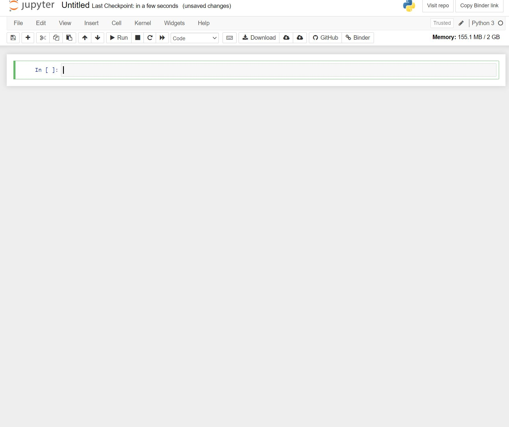
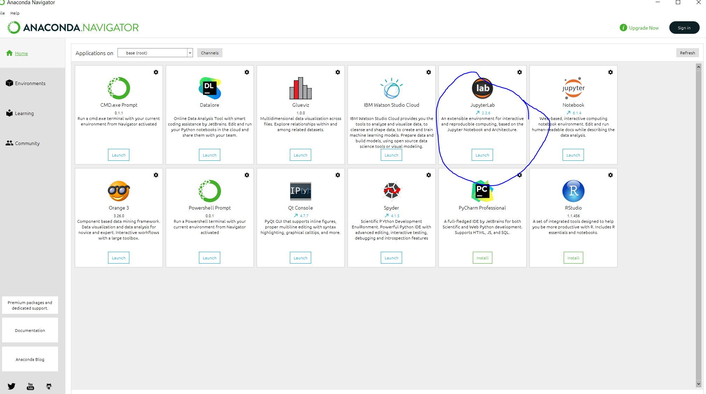

Installing Python
Contents
Installing Python #
Introduction#
The most challenging thing about working with Python (or any programming language) is learning how to install it correctly. Why is this such a challenge? Because installing Python differs dramatically by operating system and version of operating system. I present to you three different ways you can start programming Python from the easiest to the more challenging.
Using the Trinket applications embedded throughout this textbook.
Using the free built-in Binder feature of this textbook
Using a free online Jupyter Notebook
Installing Python locally via Anaconda Navigator and using Jupyter-Lab
Trinket#
Throughout this textbook, you will see Trinket applications embedded within each page. Trinket allows you to practice your coding skills without ever installing Python. If you are new to coding and want to get started immediately without installing Python, I recommend working with Trinket inside the digital version of this textbook.
These will allow for you to practice the lesson right inside the digital textbook. The Trinket applications look like this:
from IPython.display import IFrame
IFrame('https://trinket.io/embed/python3/3fe4c8f3f4', 700, 500)
You will be able to write your code inside this Trinket application and then click the play button at the top. This will execute your code and populate the results on the right hand output.
Using Binder from this JupyterBook#
Perhaps the easiest solution to getting started with Python, is to not even bother installing it. If you have access to this textbook, then you likely have internet access. If that is the case, then you can create a binder environment from this textbook. To begin, put your mouse over the rocket ship icon in the top-left portion of the page.

A button that says binder should emerge that says “Binder”. Click it.

At this stage, your screen should look like this:

If it does, then sit back and relax. It may take a few minutes as binder builds the environment. Once Binder is finished, click on File in the top left corner of the screen and then select New Notebook

After this, select Python 3 (ipykernal). This will open a fresh, new notebook.

Now you should have a new notebook that looks like this:

And now, you can fully follow along with this textbook.
Using Jupyter Notebooks Online#
If you want to be a bit more independent and learn how to code in Python online without Binder and this textbook, you can! You do not need to download and install Python on your local computer either. Instead, you can use free online compilers that allow you follow along with nearly all of this textbook without issue.
If this is your view at the moment, then click the link this link: https://jupyter.org/try
Once on the page click the picture that says Jupyter Notebook

After that, you will see a screen that looks like this:

After a few minutes, the environment will load and you should see a notebook. Click File in the top left corner, New Notebook, and Select Python 3.

Once loaded, you can following along with this textbook in this new notebook.
{kind=link}
Installing Python Locally#
If you wish to install Python locally and it is your first time, there are many problems that can surface. For this reason, I am now recommending all students install via Anaconda Navigator. It adds extra steps into the installation process, but it eliminates the potential for mistakes to occur. If a mistake occurs during the install process, it could mean that you write a program that never executes.
Anaconda Navigator is a user-friendly interface that handles the installation for you. It also allows for you to create environments, which are small areas on your computer that have a unique version of Python and libraries installed. We will learn more about this in Part 06 when we explore libraries.
In this chapter, I will walk you through the steps of installing Anaconda Navigator on your machine, regardless of operating system. In addition, I highly encourage you to watch the video on how to do this.
When we write code in Python, we do so a few different ways, depending on that code’s use. Because this is a textbook and the code I am writing is for presentation purposes, I am using a Jupyter Notebook. Other times, you may write a program in an IDE, or an Integrated Development Environment. Some of these include PyCharm, Atom, etc. In other cases, you will use Python in the terminal to perform quick tasks on data in a directory. Anaconda Navigator removes the need for you to learn how to do all of this because it allows for you to easily install Jupyter-Lab which functions like an IDE but is a bit more forgiving. In addition, you can call terminal sessions. I know these terms do not make sense right now, but as your understanding of programming expands, this paragraph will make more sense. For now, simply trust me that Anaconda Navigator and Jupyter-Lab (both of which we install in this chapter), make your start to learning to code much, much simpler.
Download Anaconda Navigator#
In order to download Anaconda Navigator go to this link here: https://www.anaconda.com/. Next, hover over Products and select Individual Edition, as seen in the image below.

Now, click on the Download button as seen in the image below and walk through the installation process on your computer. Once complete, you will have Anaconda Navigator installed.

Using Anaconda Navigator#
Now that Anaconda Navigator is installed, you can use it by opening it up on your computer. When you first see Anaconda Navigator, you will see several options on the left. In environments, you will only see one environment: base. Don’t worry about environments this early in your Python career. For now, we will simply click the Home button on the left.

Installing Jupyter-Lab#
In order to start using Python, there are a few different options available to you. You could use a terminal and following along with the textbook, but that can be quite difficult if you are just starting out. Since this textbook was designed in JupyterLab, I think it makes the most sense to install that software. Go ahead and click Install under JupyterLab. Once installed, you will be able to Launch it and follow along with the textbook.
{kind=link}
Conclusion#
If at any point in the installation process, you get frustrated, simply launch this textbook in Binder. It will be much easier and allow you to get started with the whole reason you got this textbook in the first place: to learn Python. Once you are all set, head on over to the next chapter where we will begin working with data.